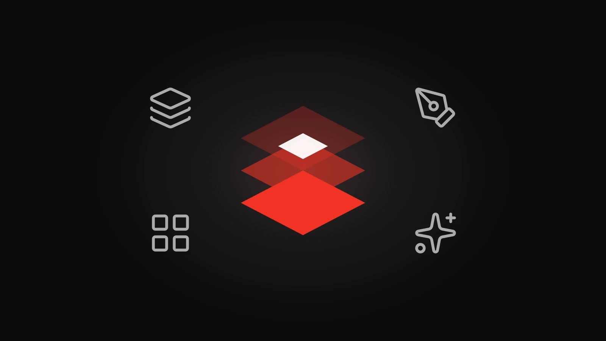
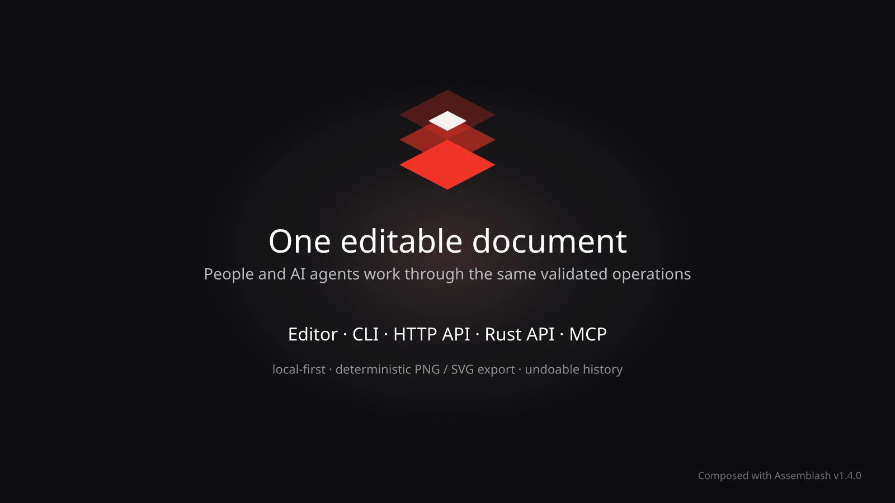

What it is
Assemblash is a local-first, open-source option for Canva-style graphics, templates and repeatable visual assets. It covers less ground than Canva, on purpose. The point is that a document stays structured and editable, on your own machine.
The idea started when I needed to work on a design away from home, without my laptop or GIMP in front of me. Canva was there, but it is closed source and a few of the features I wanted sat behind a paid plan. I also could not find anything where my AI agents could put together a first draft that was still editable afterwards. So I built Assemblash. An agent can work on another machine and send me a project, I fine-tune it, copy it to my laptop and export it again, without starting over from prompts or being handed a flat image.

The handoff problem
The hard part was never image generation, it was the handoff. My agents run on other machines, and I still want to adjust the result visually on my laptop. A flat PNG breaks that handoff, and re-prompting for small corrections is slow. Assemblash keeps the document model, assets, layers and operation history portable, so an agent-generated draft and my manual edits stay the same project.
One document, several ways to work on it
A person can inspect and refine a composition in the editor. A script, application, or AI agent can inspect layers, apply an operation, render a preview, and export through the CLI, API, or MCP.
- Structured layers, groups, assets, templates, and reusable styles
- Editable history: operations can be inspected and undone
- PNG and SVG export without depending on a cloud service
What's inside
Document model - assemblash-core
- Layer tree: canvas dimensions and background, plus text, raster image, SVG, shape (rectangle, ellipse, line) and nested group layers with position, size, rotation, scale, opacity, visibility and ordering.
- Stable identity: every layer keeps a stable ID plus metadata, locking, duplication, grouping and ungrouping, so a script can address the same element across sessions.
- Layout queries: alignment, centering, distribution, snapping, bounds and overlap queries answer the same way from the CLI, the HTTP API and MCP.
- Reuse primitives: named presets, authorable templates, named slots and deterministic variant batches turn one composition into a repeatable set.
- Ordinary files: a project is
document.json,assets/andhistory/. JSON persistence preserves unknown fields, and the contracts are published as schemas.
Operation layer and history
- One transactional path: every mutation goes through the same operation layer, and a refused operation leaves the document byte-for-byte unchanged.
- Attributed journal: successful operations are recorded with their actor and transaction ID, and can be undone or redone across restarts.
- Conflict and preview control: expected-version checks stop a stale client overwriting newer work, and a dry run shows what a mutation would do without committing it.
- Enforced protection:
locked,protectedandreadOnlylayers are enforced in the engine rather than hidden behind UI controls, and unknown top-level properties are refused instead of silently discarded. - Filesystem boundary: project and asset paths stay inside the configured boundary, and imported SVGs are sanitized before they enter the asset store.
Five interfaces, one engine
- The editor has no privileges: it is a reference client. Its edits, CLI commands, HTTP requests and MCP tool calls all compile to the same operations, so no interface can do something the others cannot review or undo.
- Local HTTP server:
assemblash servelistens on127.0.0.1and needs no configuration; a non-loopback bind refuses to start without an access token. - MCP server: read tools for documents, layers, validation, history and rendered previews, plus mutation tools carrying dry run, version checks, protection checks and undo transaction IDs.
- One self-contained executable: the built TypeScript interface is embedded in the Rust binary, so there is no Node.js runtime to install. The official
scratchcontainer image is about 9 MB.
Deterministic renderer and font store
- Document to SVG as a pure function, rasterized with
resvgandtiny-skia: PNG export, compatible SVG export and configurable output dimensions. - Fourteen blend modes out of sixteen:
color-dodgeandcolor-burnrasterize fine but are not bit-identical on every target, so they return a typed error instead of being drawn. - Non-destructive effect stack: brightness, contrast, saturation, blur, seeded grain and drop shadow are stored on the layer, not baked into the pixels.
- Fonts are never substituted: they load only from files you provide or install into the font store, and their bytes are hashed and pinned, which is what keeps the same document producing bit-identical PNGs on all six targets.
- Advisory export warnings:
wordBrokenMidWord,textOverflowsBoxand, on the HTTP and MCP paths,lockReclaimedeach carry a code and a message, plus a layer ID where one applies. They change no pixel and no exit status. They just tell you what the export could not do well, or that a stale lock was cleared first. Text in an imported SVG that names no loaded font is no longer a warning: since 1.5.0 the render refuses it with a typed error.
Release, CI and stability
- Six targets in every release: Windows, Linux and macOS on both x86_64 and ARM64, with a bare executable per Windows target and a
.debper Linux target beside the archives. - Release validation drives the real binary: the same smoke test exercises CLI, HTTP and MCP on all six targets before release, then again against checksum-verified archives downloaded after publication.
- Two promises for 1.x: a document written by 1.0 stays readable by every 1.x release, and a client written against the 1.0 operation API keeps working. Breaking either requires a major release with a documented migration.
- Limits stated in the README: styled text runs are not implemented, no AI provider adapter ships, and built-in authentication is one shared token - accounts, roles, OIDC and TLS belong in a reverse proxy in front of it.

Public release
Assemblash v1.8.0, released on 12 September 2026, is the current release. Since 1.4.0 it has gained font management, shape layers and a drop shadow effect, richer text styling, clipping, cropping and flips, and one capability listing shared by every interface. The public repository documents the released project, its local-first approach, and its interfaces for people, applications, scripts, and AI agents.
It is a focused composition engine on purpose, and it does not try to replace a full professional design application. That scope is what keeps it useful for repeatable visual assets and for work that has to stay editable.
Why I built it
Visual tools kept pushing me to one of two extremes: a powerful editor that is hard to automate reliably, or a generation pipeline that hands back a flat image nobody can comfortably refine. I wanted something between the two and could not find it.
So I made the design itself a structured file: layers, groups, assets, templates and named slots that survive being handed from one machine to another, and from an agent back to me.
That meant building the engine first and every interface as an adapter over it. An agent's work goes through the same checks as my own clicks and lands in the same history, so I can review it and undo it instead of having to trust it.
Lessons learned
Two blend modes I left out
Two blend modes drew correctly but not identically on every platform, so I left them out instead of shipping them. Getting the same result everywhere was worth more to me than two extra options.
Every change is checked
Letting an automated tool edit your work is only comfortable if every change is validated, recorded with who made it, and reversible. Then I do not have to rely on trust.
Fonts are never swapped silently
Dropping in a lookalike font is the kind of helpfulness that ruins a design later on. Assemblash only uses the font files you give it, and tells you when something does not fit.
Fixing a test suite that never failed
One release existed only to fix the test suite. Some tests were checking an old build, and a hung run reported nothing at all. It changed no feature and it was still the most useful release I shipped.